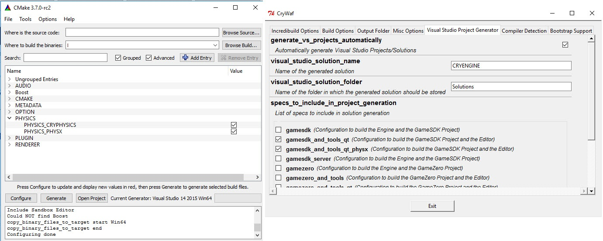

This feature is still in beta and subject to constant change. We encourage you to use it in test projects and provide your feedback to us.
However, DO NOT use it in production where it creates dependencies! Always back up your projects to make sure that you can go back to a previous version.
Overview
NVIDIA's PhysX is a scalable multi-platform game physics solution, that has been used in many of today's popular games. In addition to the native physics engine of CRYENGINE (CryPhysics), this feature allow CRYENGINE users to use the Nvidia's third party physics engine (PhysX) as an external physics engine within the CRYENGINE.
The integration of Nvidia's PhysX is minimal-inversive. Basically, the CryPhysics interface IPhysicalWorld has been implemented for PhysX to replace the physics engine. The PhysX interface-code can be found in ../Code/CryEngine/CryPhysicsSystem/CryPhysX/. The interface can be compiled using CMake and WAF build systems.
By using Nvidia's PhysX, there is a possibility of using Nvidia's PhysX Visual Debugger (PVD). This allows recording and exploring of the game world's physics which might be very useful. You can also use basic visual debugging features available directly within CRYENGINE through p_draw_helpers command in the console.
Installing and Enabling PhysX in CRYENGINE
Follow the below mentioned steps to install and enable PhysX in CRYENGINE:
- Install NVIDIA's PhysX SDK 3.3 (this is not shipped with CRYENGINE, but available for free from Nvidia).
- Compile the CRYENGINE with PhysX enabled (supported in CMake and WAF). This will create the PhysX interface in CryPhysX.dll.

- Ensure the following PhysX-SDK dll-files can be found by CRYENGINE, either by changing your system environment path variables or by copying the following PhysX-SDK files into your bin folder:
- nvToolsExt64_1.dll
- PhysX3*_x64.dll
- PhysX3CharacterKinematic*_x64.dll
- PhysX3Common*_x64.dll
- PhysX3Cooking*_x64.dll
- Add the following variables to CRYENGINE's system.cfg file, this allows the CRYENGINE to load Nvidia's PhysX instead of the native CryPhysics and disable the other unimplemented features:
p_physics_library = "CryPhysX"
e_OnDemandPhysics = 0
e_onDemandMaxSize = 999999
p_draw_helpers_num = 0
e_PhysOceanCell=0
CVar
CVar/Command | Description | Comment and examples |
|---|---|---|
| g_MaxSimpleCollisions | Used to cap the amount of rigidbody collision events per frame. | Works only when g_DisableCollisionDaamage is active (otherwise game-important collisions might be missed). This CVar is useful for profiling, since otherwise the costs of collision event processing can overwhelm the cost of the simulation, especially since it happens synchronously in the main thread. |
| p_draw_helpers | Supports limited subset of CryPhysics helpers. | Any non-0 enables PhysX helpers:
|
| p_draw_helpers_num | Specifies bitwise, numerical version of p_draw_helpers (see above). | |
| p_physics_library | Sets the physics.dll in system.cfg. | "CryPhysX" for PhysX, "CryPhysics" for CryPhysics. |
Limitations
Nvidia's PhysX does not support dynamic concave objects (in contrast to CryPhysics). The existing concave proxies (for example, vehicles) are not added to the physics world. Therefore, the proxies must be adapted to convex to behave correctly.
The PhysX-interface is a beta feature at the moment. Currently, not all features of the CryPhysics are supported in the moment. There are few limitations which are outlined below:
- only 4-wheeled vehicles supported.
- very basic living entity (but since this is normally changed by game-code anyway, this is not a major limitation).
- no ray-intersection with water surfaces.
- no breakability systems.
- no water/air areas.
- rope simulation is very basic.
- occlusion of explosions.
- character cloth (but you might check out VCloth 2.0, the cloth simulation feature of CryEngine, which is addressing this feature explicitly).
Feedback
As this is a Beta Feature, it is still in development and we would love to hear what you think about it. Please provide us with any feedback you have through the !